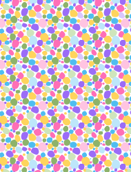

Emoční pexeso
24 dvojic příšerek, které cítí různé emoce. Hledejte stejné kartičky a u každé nalezené dvojice si povídejte, jak se příšerka cítí a co by jí pomohlo.
Co vytisknout
Dokument má 10 stran: návod a pravidla (strany 1–2) a 4 archy s kartičkami, za každým následuje jeho rub (strany 3–10).
Jak tisknout
- Silnější papír, ideálně 160–250 g/m². Obrázky pak neprosvítají a kartičky vydrží.
- Velikost 100 % (skutečná velikost), ne „přizpůsobit stránce“. Jen tak bude kartička měřit 6 × 6 cm.
- Oboustranný tisk s převracením po delší straně. Za každým archem s příšerkami následuje jeho rub.
- Bez oboustranného tisku: vytiskněte liché strany, papíry vložte zpátky podle návodu tiskárny a vytiskněte sudé.
Jak stříhat
Stříhejte po tenkých šedých linkách, nejlépe řezačkou nebo dlouhými nůžkami. Krátké čárky na okrajích archu ukazují, kudy linky vedou.
Rub je duhový vzor přes celý arch. Když tiskárna papír trochu posune, kartičky budou zezadu pořád stejné a nikdo je nepozná.
Tip: rohy můžete zakulatit a kartičky zalaminovat. Vydrží pak i hodně hraní.
Jak hrát
Pravidla
- Zamíchejte kartičky a rozložte je obrázkem dolů do řad.
- Hráč na tahu otočí dvě kartičky, aby je všichni viděli.
- Když jsou stejné, řekne, jak se příšerka cítí, nechá si dvojici a hraje znovu.
- Když stejné nejsou, otočí je zpátky a hraje další hráč.
- Hra končí, když jsou venku všechny dvojice. Vyhrává ten, kdo jich má nejvíc.
U nalezené dvojice se zeptejte
Nemusíte se ptát pokaždé na všechno. Stačí jedna otázka a chvilka povídání.
Varianty
Pro nejmenší
Hrajte jen s archem 1 a kartičky rozložte do pravidelných řad 3 × 4. Na začátku si je můžete chvíli prohlížet obrázkem nahoru.
Hra pro jednoho
Počítejte, kolikrát jste otočili dvě kartičky. Příště to zkuste na méně tahů.
Pantomima
Kdo najde dvojici, předvede emoci obličejem a tělem. Ostatní hádají, o jakou jde.
Emoční sousedé (od 5 let)
Dvojici tvoří i dvě kartičky stejné barvy, když hráč řekne, v čem jsou si emoce podobné a v čem se liší.
Barvy kartiček
Barva kartičky prozrazuje rodinu emoce, stejně jako na velkých kartách Emočních příšerek.

